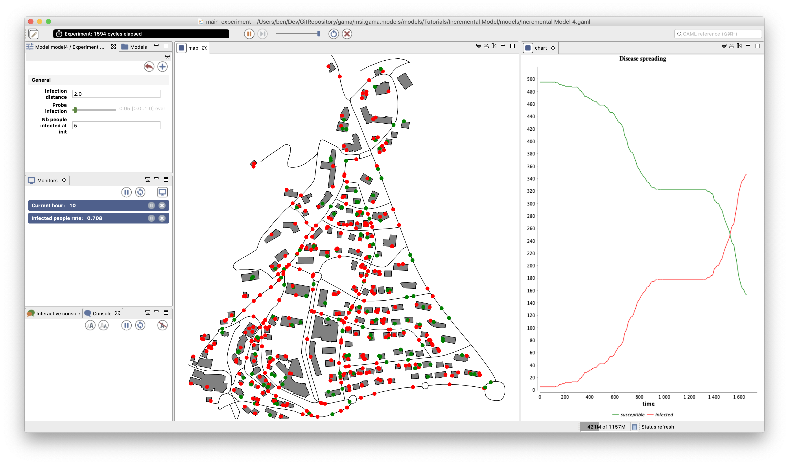

4. Movement on Graph
This step illustrates how to load a graph and use it for the displacement of our agents.
Formulation
- Definition of a global graph to represent the road network.
- Definition of a new global variable:
staying_coeffto represent the fact that people move more near 9h, 12h, and 18h. - Definition of two new variables for the people agents:
targetandstaying_counter(to manage their mobility). - Definition of a new reflex for people agents:
stay. - Modification of the
movereflex of the people agents.

Model Definition
global variables
We define two new global variables:
road_network(graph): represents the graph built from the road network.staying_coeff(float): represents the fact that people have more chance to move from their current building near 9h (go to work), 12h (lunchtime) and 18h (go home). This variable is updated at each simulation step (using theupdatefacet).
global{
....
graph road_network;
float staying_coeff update: 10.0 ^ (1 + min([abs(current_date.hour - 9), abs(current_date.hour - 12), abs(current_date.hour - 18)]));
....
}
Initialization
We need to compute from the road agents, a graph for the moving of the people agents. The operator as_edge_graph allows doing that. It automatically builds from a set of agents or geometries a graph where the agents are the edges of the graph, a node represent the extremities of the agent geometry. The weight of each edge corresponds to the length of the road.
global {
...
init {
...
create road from: roads_shapefile;
road_network <- as_edge_graph(road);
...
}
}
people agent
First, we add two new variables for the people agents:
target(point): the target location that the people want to reach (a point inside a building).staying_counter(int): the number of cycles since the agent arrived at its building.
We define a new reflex named stay that is activated when the agent has no target (target = nil), i.e. when the agent is inside a building. This reflex increments the staying_counter, then it tests the probability to leave that is computed from the staying_counter (longer the agent is inside the building, more it has a chance to leave) and the staying_coeff (closer to 9h, 12h, and 18h, more the agent has a chance to leave).
If the agents decide to leave, it computes a new target as a random point inside one of the buildings (randomly chosen).
species people skills: [moving] {
...
reflex stay when: target = nil {
staying_counter <- staying_counter + 1;
if flip(staying_counter / staying_coeff) {
target <- any_location_in (one_of(building));
}
}
...
}
We modify the move reflex. Now, this reflex is activated only when the agent has a target (target != nil). In this case, the agent moves toward its target using the built-in goto action. Note that we specified a graph (road_network) to constraint the moving of the agents on the road network with the facet on. The agent uses the shortest path (according to the graph) to go to the target point. When the agent arrives at destination (location = location), the target is set to nil (the agent will stop moving) and the staying_counter is set to 0.
species people skills:[moving]{
...
reflex move when: target != nil{
do goto target: target on: road_network;
if (location = target) {
target <- nil;
staying_counter <- 0;
}
}
}
Complete Model
model model4
global {
int nb_people <- 500;
float agent_speed <- 5.0 #km/#h;
float step <- 1 #minutes;
float infection_distance <- 2.0 #m;
float proba_infection <- 0.05;
int nb_infected_init <- 5;
file roads_shapefile <- file("../includes/road.shp");
file buildings_shapefile <- file("../includes/building.shp");
geometry shape <- envelope(roads_shapefile);
graph road_network;
float staying_coeff update: 10.0 ^ (1 + min([abs(current_date.hour - 9), abs(current_date.hour - 12), abs(current_date.hour - 18)]));
int nb_people_infected <- nb_infected_init update: people count (each.is_infected);
int nb_people_not_infected <- nb_people - nb_infected_init update: nb_people - nb_people_infected;
float infected_rate update: nb_people_infected / nb_people;
init {
create road from: roads_shapefile;
road_network <- as_edge_graph(road);
create building from: buildings_shapefile;
create people number:nb_people {
speed <- agent_speed;
location <- any_location_in(one_of(building));
}
ask nb_infected_init among people {
is_infected <- true;
}
}
reflex end_simulation when: infected_rate = 1.0 {
do pause;
}
}
species people skills:[moving]{
bool is_infected <- false;
point target;
int staying_counter;
reflex staying when: target = nil {
staying_counter <- staying_counter + 1;
if flip(staying_counter / staying_coeff) {
target <- any_location_in (one_of(building));
}
}
reflex move when: target != nil{
do goto target:target on: road_network;
if (location = target) {
target <- nil;
staying_counter <- 0;
}
}
reflex infect when: is_infected{
ask people at_distance infection_distance {
if flip(proba_infection) {
is_infected <- true;
}
}
}
aspect default{
draw circle(5) color:is_infected ? #red : #green;
}
}
species road {
aspect default {
draw shape color: #black;
}
}
species building {
aspect default {
draw shape color: #gray border: #black;
}
}
experiment main_experiment type:gui{
parameter "Infection distance" var: infection_distance;
parameter "Proba infection" var: proba_infection min: 0.0 max: 1.0;
parameter "Nb people infected at init" var: nb_infected_init ;
output {
monitor "Current hour" value: current_date.hour;
monitor "Infected people rate" value: infected_rate;
display map {
species road ;
species building ;
species people ;
}
display chart refresh: every(10#cycles) {
chart "Disease spreading" type: series style: spline{
data "susceptible" value: nb_people_not_infected color: #green marker: false;
data "infected" value: nb_people_infected color: #red marker: false;
}
}
}
}